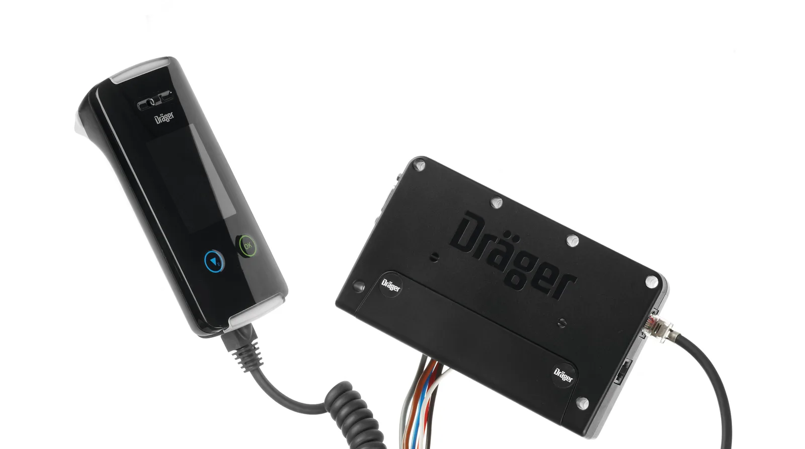
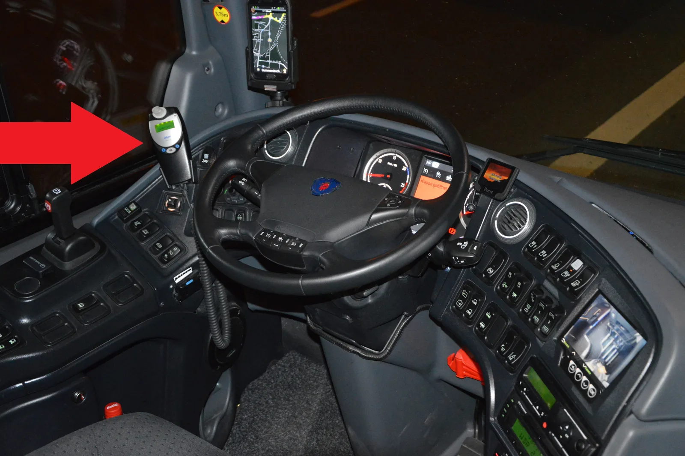
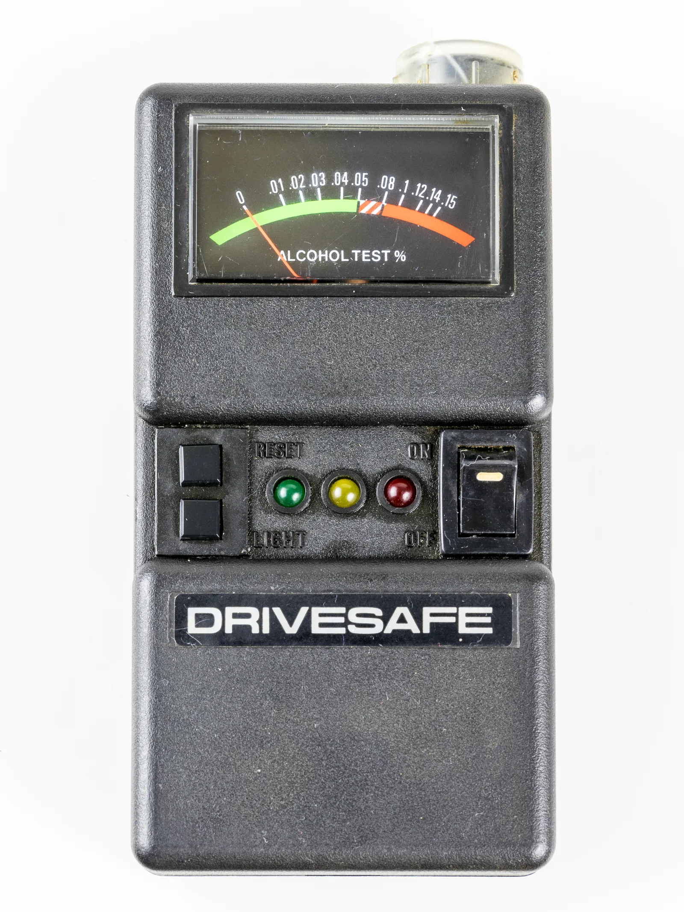

▲ 운전자가 호흡을 불어넣어 혈중알코올농도가 기준치 이하로 확인되면 시동을 걸 수 있다 ⓒ Rsheram / Wikimedia Commons (CC BY-SA 3.0)
"술 냄새가 나면 아예 시동이 걸리지 않습니다." 2026년 10월부터 국내에서도 이 문구가 현실이 된다. 최근 5년 이내 2회 이상 음주운전으로 면허가 취소됐던 사람이 다시 면허를 따려면, 이제 차량에 음주운전 방지 시동잠금장치(알코올 인터록, Ignition Interlock Device)를 의무적으로 달아야 한다.
이는 '논의 중인 법안'이 아니라 이미 개정돼 시행을 앞두고 있는 제도다. 관련 도로교통법 개정은 2024년 10월 시행됐고, 면허 결격 기간(통상 2년)을 거친 재범자들이 실제로 장치를 부착하고 도로에 나오는 시점이 2026년 10월이어서, 일반 운전자 입장에서는 이제야 '체감되는' 제도로 다가온다.
1. 무엇이, 왜 도입되나 — 재범률 40%의 벽
경찰청에 따르면 5년 이내 음주운전 재범 비중은 매년 40%에 육박한다. 2018년 이른바 '윤창호법' 시행으로 음주운전 처벌 수위가 크게 높아졌지만, 면허 취소·형사처벌만으로는 상습 음주운전을 막는 데 한계가 있다는 지적이 계속 제기돼 왔다. 실제로 일부 통계에서는 법 시행 이후에도 재범 비율이 뚜렷하게 낮아지지 않았다는 분석도 나온다.
이런 배경에서 정부가 택한 방식은 처벌 수위를 더 높이는 대신, 아예 물리적으로 음주 상태의 운전을 차단하는 것이다. 대상자는 최근 5년 이내 2회 이상 음주운전으로 면허가 취소된 뒤 재취득을 원하는 운전자로, 이들은 장치가 부착된 차량으로만 운전이 허용된다.
| 항목 | 내용 |
|---|---|
| 적용 대상 | 5년 이내 2회 이상 음주운전 적발로 면허 취소 후 재취득 희망자 |
| 차단 기준 | 혈중알코올농도 0.03% 이상 시 시동 불가 |
| 비용 부담 | 기기값·설치비 약 250만~300만 원, 전액 운전자 본인 부담 |
| 미설치 운행 시 | 무면허 운전 간주, 1년 이하 징역 또는 300만 원 이하 벌금 + 면허 취소 가능 |
| 장치 해체·조작 시 | 3년 이하 징역 또는 3,000만 원 이하 벌금 (도로교통법 제148조의3) |
| 본격 체감 시점 | 2026년 10월 — 결격기간을 거친 재범자들의 실제 부착 사례 본격화 |
📍 '논의 중'이 아니라 '시행 예정'이다
이 제도는 아직 국회에서 계류 중인 법안이 아니라, 이미 개정돼 2024년 10월 시행된 도로교통법에 근거를 둔다. 다만 면허 취소 후 재취득까지 걸리는 결격 기간(통상 2년 이상)이 있어, 실제로 장치를 부착한 차량이 도로 위에 등장하는 시점은 2026년 10월 무렵부터로 예상된다. 즉 지금 시점에서 '도입 논의'가 아니라 '시행 준비 및 확산 단계'로 보는 것이 정확하다.
2. 장치는 어떻게 작동하나 — 호흡 측정부터 재검사까지
알코올 인터록의 기본 원리는 간단하다. 운전자가 시동을 걸기 전, 계기판 근처에 설치된 호흡 튜브에 입김을 불어넣으면 내장된 센서가 혈중알코올농도(BrAC)를 측정한다. 측정값이 설정된 기준치(국내 기준안은 0.03%) 미만이면 시동이 걸리고, 기준치를 넘으면 엔진 자체가 작동하지 않는다.

▲ 손에 쥐는 호흡 측정 핸드셋(왼쪽)과 차량 배선에 연결되는 제어 유닛(오른쪽)으로 구성된 실제 인터록 장치 세트 ⓒ Ninapayan / Wikimedia Commons (CC BY-SA 4.0)
✅ 실제 운행 중 요구되는 절차
· 시동 전 측정 — 기준치 이하일 때만 시동 허용
· 주행 중 재측정(Rolling Retest) — 해외 사례처럼 주행 중에도 무작위로 재측정을 요구해 대리 호흡이나 우회를 막는 방식이 일반적
· 측정 기록 저장 — 측정 시각·결과가 장치에 기록되며, 정기 점검 시 관계기관에 제출되는 구조가 보통 적용됨
· 임의 해체 금지 — 장치를 임의로 떼거나 무력화하면 별도 형사처벌 대상
3. 해외에서는 이미 시행 중 — 효과는 어느 정도인가
알코올 인터록은 한국이 처음 시도하는 제도가 아니다. 미국은 33개 주 이상이 모든 음주운전 적발자에게 인터록 장착을 의무화하는 '전체 위반자 대상(all-offender)' 법을 시행 중이며, 유럽에서도 프랑스·핀란드 등 일부 국가가 2015년 전후로 상습 위반자 대상 의무화를 추진해왔다.

▲ 유럽에서는 버스 등 사업용 차량에도 인터록 장치(화살표)가 실제로 설치돼 운행되고 있다 ⓒ Spielvogel / Wikimedia Commons (CC0)
| 기관/연구 | 내용 |
|---|---|
| 미국 CDC 인용 보도 | 인터록 장착 운전자의 재범률이 미장착 대비 약 67% 낮음 |
| 미국 NHTSA | 인터록 도입 이후 음주운전 관련 사망사고가 15% 이상 감소했다고 평가 |
| MADD(어머니 반대 음주운전 운동) | 12년간 인터록이 300만 건 이상의 음주 시동 시도를 차단했다고 발표 |
| 미국 애리조나주(全 위반자 의무화 사례) | 2007~2017년 음주 관련 사망자 약 46% 감소 보고 |
| 유럽교통안전위원회(ETSC) | 재음주 운전 예방에 있어 인터록을 가장 효과적인 수단 중 하나로 평가 |
📍 다만 '장착 중'에만 효과가 크다는 한계도 있다
해외 연구들은 공통적으로 한 가지 한계를 짚는다. 인터록이 장착돼 있는 동안에는 재범률이 뚜렷하게 낮아지지만, 장치를 떼어낸 이후에는 미장착 그룹과 재범률 차이가 다시 좁혀지는 경향이 보고된다는 점이다. 즉 인터록은 '술을 끊게 만드는 장치'라기보다는, 장착 기간 동안 음주 상태의 운전을 물리적으로 차단하는 안전장치에 가깝다는 해석이 많다.
미국 도로교통안전국(NHTSA)의 인터록 관련 정책 자료는 아래에서 확인할 수 있다. NHTSA 인터록 정책자료 바로가기
4. 국내 도입을 둘러싼 남은 쟁점
법 자체는 이미 시행 단계에 들어섰지만, 실제 확산 과정에서는 여전히 논쟁의 여지가 있는 지점들이 있다.
✅ 시행 과정에서 계속 제기되는 쟁점
· 비용 부담의 형평성 — 250만~300만 원에 달하는 설치·유지 비용이 전액 본인 부담이어서, 경제적 여건이 어려운 재범자에게는 사실상 면허 재취득 자체를 막는 장벽이 될 수 있다는 지적
· 사생활·이동권 침해 논란 — 측정 기록이 지속적으로 저장·제출되는 방식에 대해 과도한 감시라는 우려가 제기됨
· 실효성 논쟁 — 해외 사례처럼 '장착 기간 중'에만 효과가 크다면, 장기적인 재범 예방 효과는 제한적일 수 있다는 반론
· 우회·대리 호흡 가능성 — 동승자가 대신 호흡을 불어넣는 등 편법 사용을 완전히 차단하기 어렵다는 기술적 한계도 지적됨
5. 기존 제도(윤창호법)와 무엇이 다른가
윤창호법(2018년 개정 도로교통법·특정범죄가중처벌법)은 음주운전 처벌 수위를 높이는 데 초점을 맞췄다. 혈중알코올농도 기준을 낮추고, 재범 시 가중처벌 조항을 신설한 것이 핵심이었다. 반면 이번 시동잠금장치 제도는 처벌이 아니라 '물리적 차단'에 초점을 맞춘다는 점에서 접근 방식이 다르다.
| 구분 | 윤창호법(2018) | 시동잠금장치 제도(2026년 10월~) |
|---|---|---|
| 초점 | 사후 처벌 강화 | 사전 물리적 차단 |
| 핵심 내용 | 음주운전 기준 강화, 재범 가중처벌 | 재범자 차량에 인터록 의무 장착 |
| 적용 시점 | 적발·처벌 시점 | 면허 재취득 이후 상시 |
| 한계로 지적된 점 | 재범률이 기대만큼 낮아지지 않았다는 평가 | 비용 부담, 장착 해제 이후 효과 지속성 논란 |

▲ 호흡을 통해 혈중알코올농도를 측정하는 원리 자체는 오래전부터 쓰여 온 방식이며, 인터록은 이를 시동 제어와 결합한 형태다 ⓒ Raimond Spekking / Wikimedia Commons (CC BY-SA 4.0)
결국 두 제도는 서로 대체 관계가 아니라 보완 관계로 봐야 한다는 평가가 많다. 처벌 강화만으로 막지 못한 재범을, 물리적 장치로 한 번 더 막아보겠다는 것이 이번 제도의 취지다.
6. 요약
음주운전 방지 시동잠금장치는 이미 법제화돼 2026년 10월부터 재범자 차량에 본격적으로 적용될 예정이다. 5년 이내 2회 이상 적발자가 면허를 재취득하려면 혈중알코올농도 0.03% 기준의 인터록 장치를 의무로 달아야 하며, 비용은 전액 본인 부담(약 250만~300만 원)이다.
미국·유럽 등 앞서 도입한 국가들에서는 재범률이 최대 67%까지 낮아졌다는 효과가 보고됐지만, 장치를 뗀 이후 효과가 옅어진다는 한계도 함께 지적된다. 국내 도입 과정에서도 비용 형평성, 사생활 침해, 실효성 논쟁은 여전히 진행 중인 쟁점이다.
윤창호법이 처벌을 강화하는 데 초점을 맞췄다면, 이번 제도는 처벌만으로 막지 못한 재범을 물리적으로 차단하려는 시도다. 2026년 10월 이후 실제 적용 사례가 늘어나면서, 제도의 실효성에 대한 평가도 점차 구체화될 것으로 보인다.